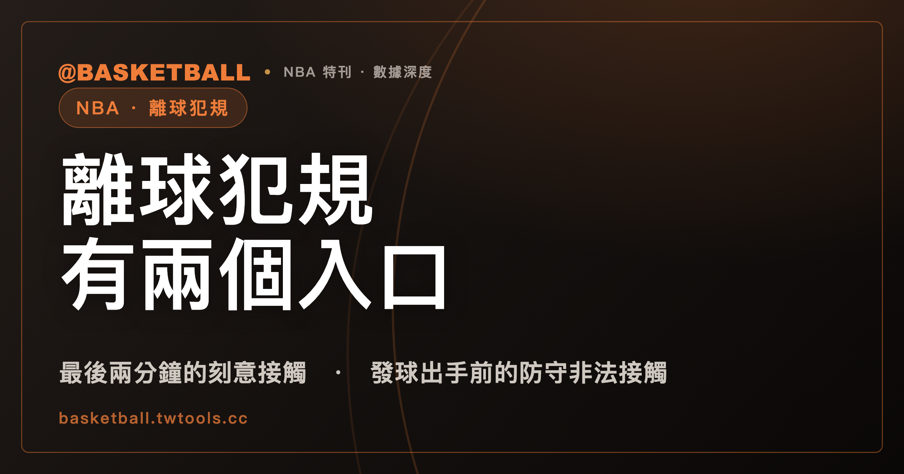

離球犯規有兩個入口：最後兩分鐘的刻意接觸，與發球出手前的防守非法接觸
依 NBA 2025-26 官方規則書，away-from-the-play foul（本站譯為離球犯規）有兩個分立的定義入口：每一節與每個延長賽最後兩分鐘內、刻意離開進攻動作直接區域的防守非法接觸，以及發球出手前、全場任一時點的防守非法接觸。罰則是一次罰球加保留球權。

新手村｜規則入門・離球犯規
看比賽時會聽到「最後兩分鐘」「離球犯規」「故意犯規」這幾個詞，聽起來像是同一件事的不同說法。翻開 NBA 2025-26 官方規則書，會發現規則書對其中一個詞有明確的定義與罰則，另外兩個說法則沒有出現在規則書裡。
這篇文章只談規則書怎麼寫：離球犯規的定義有兩個入口、時間窗是哪一段、罰則是什麼、球權怎麼給，以及和一般犯規差在哪裡。規則書沒有寫的事，例如這類犯規對比賽結果有沒有影響、規則為什麼設立，本文不談。讀完之後，你可以拿一個標明「假設」的情境，自己判斷它屬於哪一個入口，或是兩個都不屬於。
本文中的「離球犯規」是本文採用的中文譯名，規則書原文是 away-from-the-play foul，不是規則書用語。
離球犯規有兩個定義入口，條件各不相同
NBA 2025-26 官方規則書 Rule 4 Section IV(h) 給了 away-from-the-play foul 的定義，定義句裡有兩個以編號分開的入口。
第一個入口：防守方在每一節最後兩分鐘、以及任何延長賽最後兩分鐘內，刻意發生在進攻動作直接區域之外的非法接觸。這個入口同時要求三件事：時間在最後兩分鐘內、接觸是刻意的、位置離開進攻動作的直接區域。
第二個入口：發球（throw-in）的球出手之前，整場比賽任何時點發生的防守方非法接觸。第二個入口的定義句只寫了「發球出手前」與「整場任何時點」，沒有再重複第一個入口那三個條件。
第一個入口有三個條件，第二個入口的定義句沒有寫這三個條件，本文照條文結構分開處理，不把兩者合併成一句「只看時間窗與位置」。
規則書的其他條文也把這個犯規當成一個獨立的類別：Rule 12B Section X(a) 開頭就寫明「which is defined in Rule 4, Section IV(h)」，再依此判罰；Rule 12B Section V(a)(5) 把離球犯規和 flagrant、punching 並列，說這幾類個人犯規各有自己的罰則，並且計入全隊犯規總數。
第一個入口的時間窗是每一節的最後兩分鐘，不只第四節
一種容易有的想像是「比賽尾聲才會出現的犯規」，於是把時間窗想成只有第四節。照 NBA 2025-26 規則書 Rule 4 Section IV(h) 的原文，第一個入口寫的是 each period（每一節）加上 any overtime periods（任何延長賽）的最後兩分鐘。第一節、第二節、第三節的最後兩分鐘，也在時間窗內。
「最後兩分鐘」從什麼時候開始算？Rule 4 Section XIII 寫：比賽時鐘顯示 2:00 時，該節視為進入兩分鐘時段。所以時鐘從 2:00 往下倒數的那一段，才是第一個入口的時間窗。
要留意，「第四節與每個延長賽最後兩分鐘」這種限定，確實出現在同一本規則書的別處。例如 Rule 4 Section IV(i)(4) 在 transition take foul 的排除條件裡寫了：犯規不發生在第四節或任何延長賽的最後兩分鐘。那是另一個犯規類別的條件，不是離球犯規的定義。兩個類別的時間窗寫法不同，不要互相套用。
「進攻動作直接區域」有多遠？規則書沒有寫距離
第一個入口的位置條件是 away from the immediate area of offensive action（離開進攻動作的直接區域）。這句話在定義句裡只有這一句，沒有給距離、也沒有給場上球員人數之類的量化標準。規則書的 Comments on the Rules 附錄，本文在全文檢索中也沒有找到補充。
「刻意」的寫法也一樣。規則書在這個定義句裡用副詞 deliberately，沒有另外列出判斷刻意與否的清單。規則書條文本身沒有給出可以拿尺量的門檻，實際判定的細節不在本文範圍，所以本文的假設情境只會寫「假設符合」，不替條文畫一條線。
這一節的用處是提醒讀者：想自己判斷時，「時間窗」可以對時鐘檢查，「刻意」與「直接區域」則是判斷題，條文沒有提供量化答案。
第二個入口在發球出手前，整場比賽任何時點都適用
第二個入口的時點是 prior to the ball being released on a throw-in（發球的球出手之前）。發球什麼時候算開始、什麼時候算結束？Rule 4 Section XII 寫：球交給發球者並由他控制，或在他可支配範圍時，發球開始；球出手時，發球結束。所以「出手前」指的是發球開始到球出手之間的這段時間。
這個入口不限時間。第一節開賽後不久、第三節中段，只要發生在發球出手前，都適用這個入口的定義。
拿它和第一個入口對照：第一個入口的三件事（最後兩分鐘、刻意、離開直接區域），第二個入口的定義句沒有寫。也就是說，讀第二個入口時，不必回頭檢查時鐘有沒有低於 2:00。
罰則是一次罰球，可由犯規時在場上的任一球員執行
離球犯規怎麼罰，寫在 Rule 12B Section X(a)(1)。依 NBA 2025-26 官方規則書：判一次個人犯規與一次全隊犯規，並給一次罰球；這一次罰球，可以由犯規發生時在場上的任一球員執行。
這和一般個人犯規的原則不同。Rule 9 Section II(a) 的一般原則是：因個人犯規判的罰球，由被犯規的球員執行。離球犯規則出現在同一條 Rule 9 Section II(a) 的例外清單裡，例外 (5) 寫的是「Away-from-the-play foul—Rule 12B, Section X(a)(1)」，回指剛才那條罰則。
兩件事在條文裡各自成立：一般原則寫由被犯規球員罰，離球犯規在例外清單中，回指自己的罰則條文。本文只把兩處並列，執行者要以離球犯規自己的那一條為準。
球權跟著犯規發生的時點走：球在場內與發球出手前不同
罰球之外，還有球權。Rule 12B Section X(a) 分成兩種狀況：
| 犯規發生的時點 | NBA 2025-26 規則書怎麼寫（意譯） | 條號 |
|---|---|---|
| 球在場內（inbounds） | 受犯規方在最近的中斷點邊線獲得球權，但位置不得比罰球線延伸處更靠近底線 | X(a)(2) |
| 發球出手前 | 受犯規方在原發球點獲得球權，並保留原有的權利（如有） | X(a)(3) |
這張表可以配合前面兩個入口來讀：第二個入口的犯規發生在發球出手前，看起來對應的是原發球點那一列；第一個入口的犯規若發生在球在場內時，看起來對應的是邊線那一列。這樣的對應是本文依條文結構整理的讀法，Rule 12B Section X(a)(2)(3) 是依「球在場內」和「發球出手前」這兩個時點分列，並沒有直接寫「第一入口對應第二列」。
另外，一般防守犯規、沒有進入罰球狀態、球員又不在投籃動作時，Rule 12B Section I(2) 也寫了「球在中斷處邊線、不得比罰球線延伸處更靠近底線」。兩處各自有相似的文字，本文只並列，不推論兩者的關係。
離球犯規的罰球，和一般犯規的罰球規則各自獨立
一般（common）個人犯規在 Rule 4 Section IV(a) 的定義是：球變成活球之後、節結束的鳴笛之前，與對手發生的非法身體接觸。它的罰球數要看情境：Rule 12B Section V(a) 寫，正規時間的每一節，每隊有四次全隊犯規的額度，超過四次的一般犯規，判一次罰球加一次罰則罰球。Rule 12B Section I (5) 也寫，處於罰球狀態、防守犯規、進攻球員不在投籃動作時，判一次罰球加一次罰則罰球。這裡的「罰球狀態」是 penalty situation 的中文慣稱，不是規則書用語。
離球犯規的罰則另寫在別處。Rule 12B Section V(a)(5) 寫，離球犯規等幾類個人犯規「carry their own separate penalties and are included in the team foul total」，也就是各有自己的罰則，並且計入全隊犯規總數。離球犯規的罰則在前面已經看過：一次罰球，加球權。
整理起來，可以用兩個問題區分：
- 這次接觸符不符合離球犯規的兩個入口之一？符合，就看 Rule 12B Section X 的罰則。
- 不符合的話，是不是非法接觸？是的話，本文的讀法是回到一般犯規的定義，再看全隊犯規數與是否在投籃動作，決定罰球。這個「回到一般犯規」是本文依定義句結構做的推論，規則書沒有用這句話。
離球犯規同時是 flagrant 或 punching，改判兩次罰球
Rule 12B Section X(b) 寫：如果離球犯規同時是 flagrant 或 punching 犯規，改判兩次罰球（X(b)(1)：一次個人犯規與一次全隊犯規，罰球者獲得兩次罰球）。照這條文的結構看，一次接觸可以同時符合離球犯規的定義與 flagrant 或 punching 的定義；這時依 X(b) 判罰，而不是 X(a)(1) 的一次罰球。
flagrant 與 punching 各自怎麼分級、怎麼判，本文不重寫，請看本站的技術犯規與惡意犯規入門。判罰有爭議時能不能用重播挑戰，可以看教練挑戰入門。
規則書裡有「故意犯規」或 Hack-a-Shaq 的名目嗎？
在本文檢索的 NBA 2025-26 規則書文字檔中，搜尋 hack（不分大小寫），沒有任何命中。搜尋 intentional foul 也沒有把它當成一個犯規類別的地方；intentional 這個字只出現在腳踢球（Rule 10）與規則書後段對裁判身體接觸的處分等語境，不是犯規分類。
因此 Hack-a-Shaq、Hack，以及中文的「故意犯規」，都不是規則書用語。這類名稱是球迷與媒體使用的俗稱或中文慣稱。規則書處理「刻意」這件事的方式，是在離球犯規的定義句裡用 deliberately 這個副詞，並且是第一個入口的其中一個條件。
寫作或討論時，如果指的是規則書的這個概念，用 away-from-the-play foul（離球犯規）比較不會混淆；如果聽到別人用「故意犯規」，可以先問對方指的是哪一種情境，再回到規則書對照。
這裡有兩個限制。第一，「查無」只表示在這份檔案的全文檢索裡沒有找到，不代表別的官方文件也沒有這些詞。第二，規則書本身沒有說明為什麼設立這個犯規類別，也沒有官方的立法動機說明，本文不猜測。
FIBA 2024 規則裡找得到同樣的條文嗎？
本文另外對照了 FIBA 2024 官方規則（本機文字檔）。在這個範圍內，沒有找到同名的 away-from-the-play 條文，也沒有找到以「最後兩分鐘」作為條件的分類。全文檢索 away from 只有兩處與本題無關的命中，一處是服裝廣告的間距，一處是重播審查項目中的 away from a shooting situation。
FIBA 2024 Article 37.1.1 寫的是不運動精神犯規的定義：「An unsportsmanlike foul is a player contact which is:」。這是不同的犯規類別，本文不把它和離球犯規畫等號。
必須留意寫法：本文的結論只是「在本文查證範圍內未找到同名或同一時間窗的條文」，不是「FIBA 沒有對應規則」。未找到條文，不能推出 FIBA 沒有功能相近的判罰。FIBA 另有一版 2026 規則預定 2026 年 10 月 1 日生效，本文沒有取得該版，也就沒有使用。
拿三個假設情境，自己判一次
下面三個情境都是假設的舉例，不是真實比賽。判斷步驟可以用三個問題：時鐘在不在每一節最後兩分鐘內？球是不是發球出手前？如果兩者都不是，接觸算不算一般犯規？
假設情境一。 假設某場 NBA 例行賽第二節，時鐘顯示 1:30，一名防守球員在遠離持球者、沒有進攻動作發生的地方，對無球的進攻球員做出非法接觸，並假設裁判認定這是刻意的、且離開了進攻動作的直接區域。
判斷：時鐘 1:30 已低於 2:00（Rule 4 Section XIII），而且是第二節，落在「每一節最後兩分鐘」內。假設刻意與位置兩項也成立，就符合第一個入口。依 Rule 12B Section X(a)(1)，判一次個人犯規、一次全隊犯規、一次罰球，可由犯規時在場上的任一球員執行；球在場內，受犯規方在最近的中斷點邊線獲得球權，不得比罰球線延伸處更靠近底線。這個情境用第二節，是為了練習「時間窗不只第四節」。
假設情境二。 假設第一節時鐘顯示 8:00，某隊在邊線發球，球還在發球者手上、尚未傳出，一名防守球員對準備接球的進攻球員做出非法接觸。
判斷：這發生在發球出手前，符合第二個入口。第二個入口的定義句沒有寫最後兩分鐘、刻意、離開直接區域這三個條件，所以這裡不必檢查時鐘。依 Rule 12B Section X(a)(1) 與 X(a)(3)：一次罰球，受犯規方在原發球點獲得球權，並保留原有的權利。假設這次接觸同時被認定為 flagrant，就改依 X(b)，判兩次罰球。
假設情境三。 假設第三節時鐘顯示 6:00，球在場內、進攻正在進行，一名防守球員在離球較遠的地方對無球球員做出非法接觸。
判斷：時鐘 6:00 不在最後兩分鐘，也不是發球出手前，兩個入口的定義句都不符合。這次接觸是不是犯規，回到 Rule 4 Section IV(a) 的一般犯規定義；本文的讀法是它屬於一般犯規，再依全隊犯規數與是否在投籃動作決定罰球（Rule 12B Section V(a)、Section I）。這裡「屬於一般犯規」是本文依條文結構做的讀法，不是規則書原文。
三個情境都只是練習用的假設，沒有對應任何真實比賽。規則書沒有量化「直接區域」的距離，情境一那兩個假設條件是否成立，本文不替條文下結論。
常見問題
離球犯規只會在第四節出現嗎？
不是。依 NBA 2025-26 官方規則書 Rule 4 Section IV(h)，第一個入口的時間窗是「每一節」與「任何延長賽」的最後兩分鐘，起點是比賽時鐘顯示 2:00（Rule 4 Section XIII）。第二個入口是發球出手前，整場任何時點都適用，不受最後兩分鐘限制。「第四節與延長賽最後兩分鐘」這種限定，出現在規則書別處的 transition take foul 排除條件（Rule 4 Section IV(i)(4)），不是離球犯規的定義。
離球犯規怎麼罰？
依 NBA 2025-26 官方規則書 Rule 12B Section X(a)：判一次個人犯規與一次全隊犯規，給一次罰球，可由犯規發生時在場上的任一球員執行。球在場內時，受犯規方在最近的中斷點邊線獲得球權，不得比罰球線延伸處更靠近底線；發球出手前，受犯規方在原發球點獲得球權，並保留原有的權利。如果離球犯規同時是 flagrant 或 punching，依 Section X(b) 改判兩次罰球。以上是 NBA 2025-26 規則書，本文沒有取得其他賽季或其他聯盟的版本。
規則書裡有「故意犯規」或 Hack-a-Shaq 這種犯規嗎？
在本文檢索的 NBA 2025-26 官方規則書文字檔中，沒有找到 hack 這個字，也沒有把 intentional foul 當成犯規類別的條文。規則書用的是 away-from-the-play foul（離球犯規），並且在第一個入口的定義句裡用 deliberately 這個副詞描述「刻意」。「故意犯規」與 Hack-a-Shaq 是俗稱與慣稱，不是規則書用語。查無只表示在這份文字檔的全文檢索沒有找到，範圍限於 NBA 2025-26 規則書。
FIBA 有和離球犯規一樣的規則嗎？
在本文查證範圍內，FIBA 2024 官方規則（本機文字檔）沒有找到同名或同一時間窗的條文。FIBA 2024 Article 37 是不運動精神犯規的定義，本文不把它視為離球犯規的對應條文。未找到同名條文，不代表 FIBA 沒有功能相近的判罰，本文也沒有取得 2026 年 10 月 1 日生效的 FIBA 新版規則。
資料來源
- NBA Official Playing Rules 2025-26 賽季規則書（本機文字檔，2026 年 9 月 29 日讀取，無可點擊網址）：Rule 4 Section IV(a)、IV(h)、IV(i)(4)、Section XII、Section XIII；Rule 9 Section II(a)；Rule 12B Section I、Section V(a)、Section X。
- FIBA 官方規則 2024（本機文字檔，2026 年 9 月 29 日讀取，無可點擊網址）：Article 37.1.1，並對全文檢索 away from、two minutes 等詞。